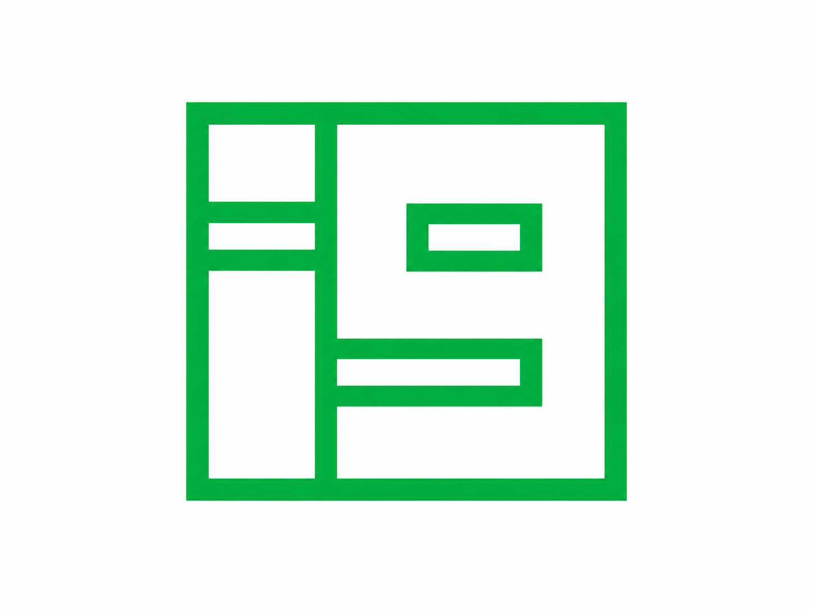
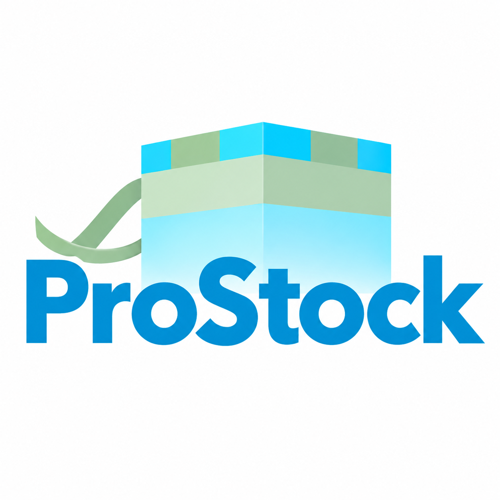
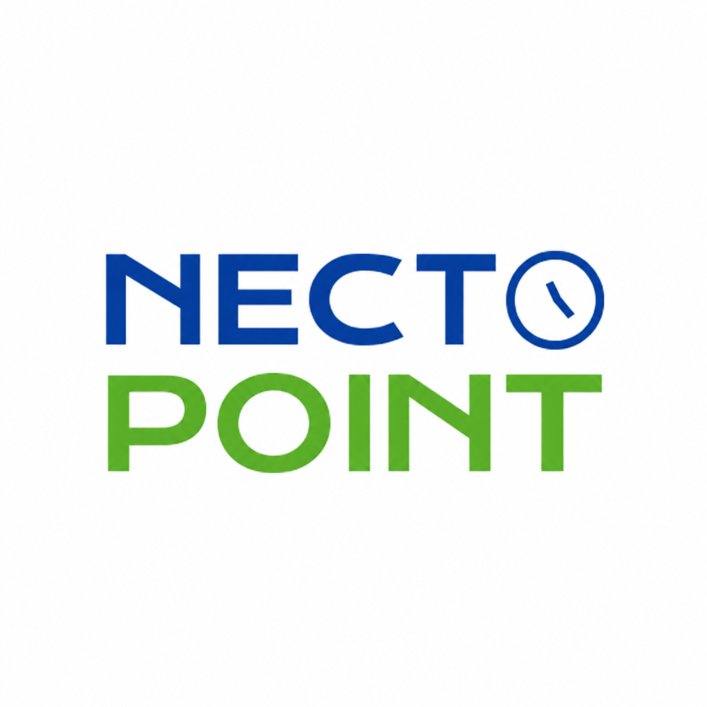
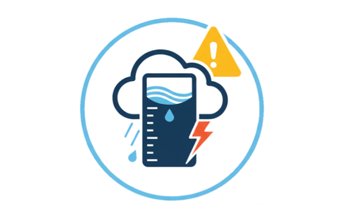
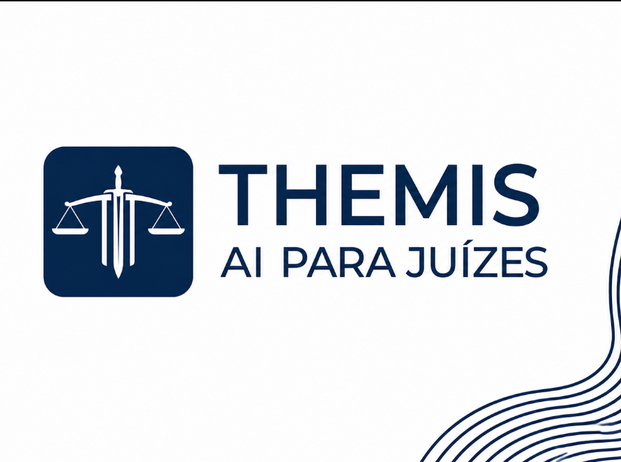

Smart Farming
Painel web que automatiza o tratamento dos dados de sensores de uma estufa em gráficos e alertas.
Portfólio · Desenvolvimento
Sou Desenvolvedor de Software em formação, com experiência prática em Java, Python, Kotlin e Oracle SQL. Construo aplicações modernas e escaláveis com foco em segurança, código limpo e boas práticas de desenvolvimento.
Quem eu sou
Sou desenvolvedor Full Stack em formação, com experiência prática em Java, Python, C#, .NET, Kotlin, React, Tailwind CSS, Oracle SQL e MongoDB. Atualmente atuo como Estagiário de Desenvolvimento de Software na Kaffa Tech, desenvolvendo scripts e soluções em C# e Python, além de consultas e manipulação de dados com Oracle SQL.
Tenho formação em Tecnólogo de Desenvolvimento de Software Multiplataforma pela FATEC São José dos Campos, e participei de diversos projetos acadêmicos utilizando Scrum, com foco em segurança, UI/UX, código limpo e boas práticas de desenvolvimento. Também já atuei com design gráfico, o que me deu uma base sólida de sensibilidade visual que carrego para as interfaces que construo.
Tecnólogo em Desenvolvimento de Software Multiplataforma — FATEC SJC
Desenvolvimento de Software
Java, Python, React, MongoDB
Estagiário de Dev. de Software — Kaffa Tech (2026 - Atual)
Trabalho selecionado

Painel web que automatiza o tratamento dos dados de sensores de uma estufa em gráficos e alertas.

Sistema de controle de estoque com cadastro de produtos, fornecedores e relatórios estratégicos.

Sistema de gestão de ponto eletrônico com registro automatizado, horas extras e férias.

Sistema de coleta meteorológica em tempo real para prevenção de enchentes e deslizamentos.

Plataforma de IA jurídica que analisa petições e identifica precedentes judiciais relevantes.
Coach de estudos via chat com IA, focado em ENEM, com reconhecimento automático de tópico e questionários.
Fora do código
Fora do código, sou movido por camadas de ruído, texturas e contraste — a mesma curiosidade estética que aplico em interfaces aparece na música que escuto, nas imagens que colho e nos jogos que jogo.
Esta seção é um espaço mais pessoal do portfólio: interesses que moldam minha forma de ver design, ritmo e composição, mesmo quando não estão diretamente ligados a trabalho ou faculdade.